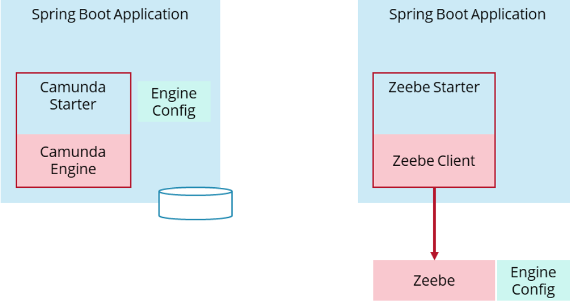
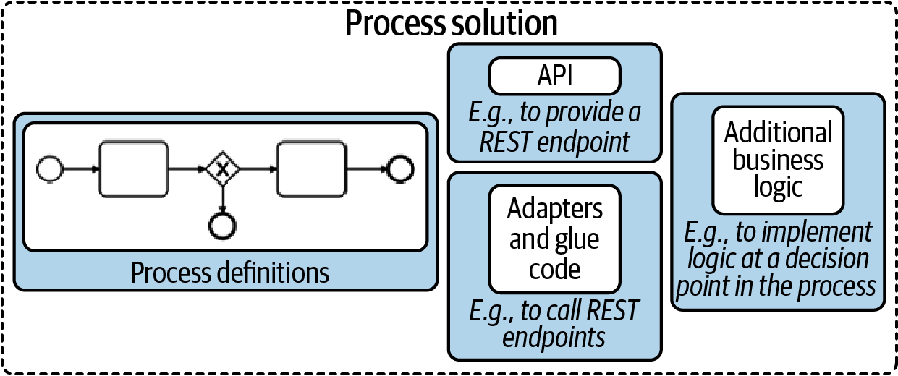
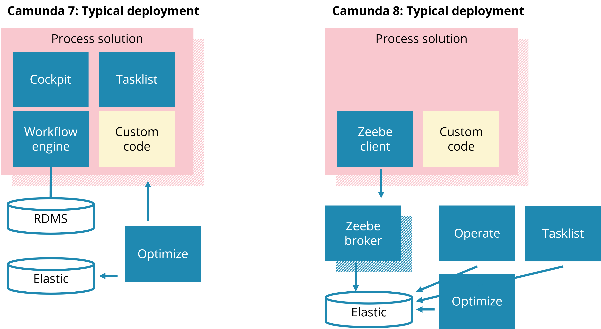
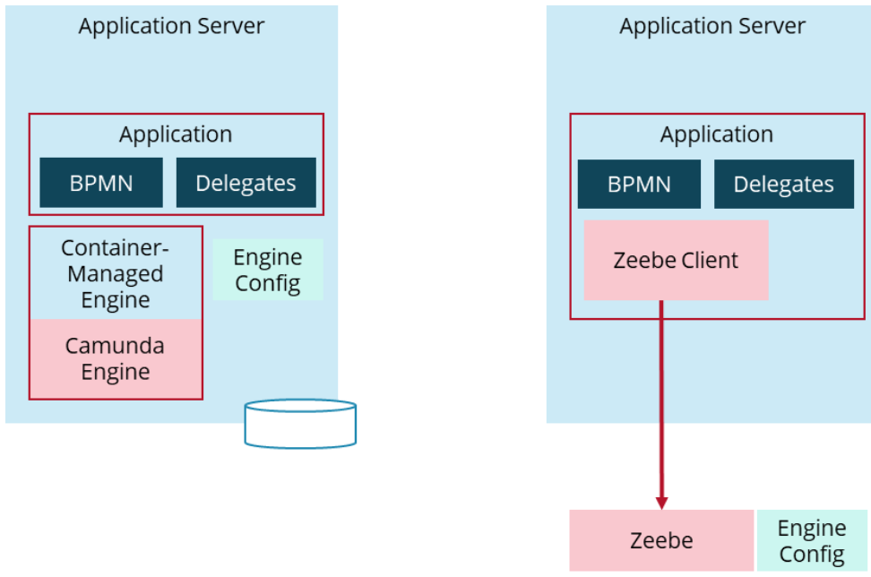
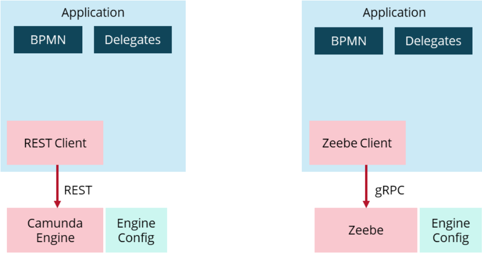

Conceptual differences with Camunda 7 and Camunda 8
Conceptual differences
This section does not compare Camunda 7 with Camunda 8 in detail, but rather lists differing aspects important to know when thinking about migration.
No embedded engine in Camunda 8
Camunda 7 allows embedding the workflow engine as a library in your application. This means both run in the same JVM, share thread pools, and can even use the same data source and transaction manager.
In contrast, the workflow engine in Camunda 8, Zeebe, is always a remote resource for your application, while the embedded engine mode is not supported.
If you are interested in the reasons why we switched our recommendation from embedded to remote workflow engines, refer to this blog post.
The implications for your process solution and the programming model are described below. Conceptually, the only big difference is that with a remote engine, you cannot share technical ACID transactions between your code and the workflow engine. You can read more about it in the blog post on achieving consistency without transaction managers.
Different data types
In Camunda 7, you can store different data types, including serialized Java objects.
Camunda 8 only allows storage of primary data types or JSON as process variables. This might require some additional data mapping in your code when you set or get process variables.
Camunda 7 provides Camunda Spin to ease XML and JSON handling. This is not available with Camunda 8, and ideally you migrate to an own data transformation logic you can fully control (e.g. using Jackson).
To migrate existing process solutions that use Camunda Spin heavily, you can still add the Camunda Spin library to your application itself and use its API to do the same data transformations as before in your application code.
Expression language
Camunda 7 uses Java Unified Expression Language (JUEL) as the expression language. In the embedded engine scenario, expressions can even read into beans (Java object instances) in the application.
Camunda 8 uses Friendly-Enough Expression Language (FEEL) and expressions can only access the process instance data and variables.
Most expressions can be converted (see this community extension as a starting point), some might need to be completely rewritten, and some might require an additional service task to prepare necessary data (which may have been calculated on the fly when using Camunda 7).
Different Connector infrastructure
Through Camunda Connect, Camunda 7 provides an HTTP and a SOAP HTTP Connector. Camunda 8 offers multiple Connectors out-of-the-box.
To migrate existing Connectors, consider the following options:
- Use the REST protocol Connector to leverage an out-of-the-box Connector.
- Create a small bridging layer via custom job workers.
Multi-tenancy
There are several differences between how multi-tenancy works in Camunda 7 and Camunda 8:
- The one engine per tenant approach from Camunda 7 isn't possible with Camunda 8. Camunda 8 only provides multi-tenancy through a tenant identifier.
- In Camunda 7, users can deploy shared resources (processes, decisions, and forms) available to all tenants. In Camunda 8, there are no shared resources. This will be added in the future.
- In Camunda 7, data is mapped to a
nulltenant identifier, meaning by default resources are shared. In Camunda 8, data is mapped to the<default>tenant identifier when multi-tenancy is disabled. - Tenant checks in Camunda 7 can be disabled to perform admin/maintenance operations. This can't be done in Camunda 8, but an admin user can be authorized to all tenants, which would result in the same thing.
- If a user tries to trigger a command on a resource mapped to multiple tenants in Camunda 7, an exception is thrown, and the
tenantIdmust be explicitly provided. However, the Camunda 7 engine will try to infer the correcttenantIdas much as possible. Users in Camunda 7 that are authorized for multiple tenants may perform a lot more operations without providing atenantId. This inference in the Zeebe broker doesn't happen in Camunda 8, and Zeebe asks users to provide thetenantIdexplicitly.
Process solutions using Spring Boot
With Camunda 7, a frequented architecture to build a process solution (also known as process applications) is composed out of:
- Java
- Spring Boot
- Camunda Spring Boot Starter with embedded engine
- Glue code implemented in Java delegates (being Spring beans)
This is visualized on the lefthand side of the picture below. With Camunda 8, a comparable process solution would look like the righthand side of the picture and leverage:
- Java
- Spring Boot
- Spring Zeebe Starter (embedding the Zeebe client)
- Glue code implemented as workers (being Spring beans)

The difference is that the engine is no longer embedded, which is also our latest greenfield stack recommendation in Camunda 7. If you are interested in the reasons why we switched our recommendation from embedded to remote workflow engines, refer to this blog post.
The packaging of a process solution is the same with Camunda 7 and Camunda 8. Your process solution is one Java application that consists of your BPMN and DMN models, as well as all glue code needed for connectivity or data transformation. The big difference is that the configuration of the workflow engine itself is not part of the Spring Boot application anymore.

Process solution definition taken from Practical Process Automation.
You can find a complete Java Spring Boot example, showing the Camunda 7 process solution alongside the comparable Camunda 8 process solution in the Camunda 7 to Camunda 8 migration example.
Programming model
The programming models of Camunda 7 and Camunda 8 are very similar if you program in Java and use Spring.
For example, a worker in Camunda 8 can be implemented like this (using spring-zeebe):
@JobWorker(type = "payment")
public void retrievePayment(ActivatedJob job) {
// Do whatever you need to, e.g. invoke a remote service:
String orderId = job.getVariablesMap().get("orderId");
paymentRestClient.invoke(...);
}
You can find more information on the programming model in Camunda 8 in this blog post.
JUnit testing with an embedded in-memory engine is also possible with Camunda 8, see spring-zeebe documentation.
Camunda deployment
A typical deployment of the workflow engine itself looks different because the workflow engine is no longer embedded into your own deployment artifacts.
With Camunda 7 a typical deployment includes:
- Your Spring Boot application with all custom code and the workflow engine, Cockpit, and Tasklist embedded. This application is typically scaled to at least two instances (for resilience)
- A relational database
- An Elasticsearch database (for Optimize)
- Optimize (a Java application)
With Camunda 8 you deploy:
- Your Spring Boot application with all custom code and the Zeebe client embedded. This application is typically scaled to at least two instances (for resilience)
- The Zeebe broker, typically scaled to at least three instances (for resilience)
- An elastic database (for Operate, Tasklist, and Optimize)
- Optimize, Operate, and Tasklist (each one is a Java application). You can scale those applications to increase availability if you want.

Camunda 8 deployments happen within Kubernetes. There are Helm charts available if you want to run Camunda 8 Self-Managed.
Camunda 8 is also available as a SaaS offering from Camunda. In this case, deploy your own process solution and Camunda operates the rest.
For local development purposes, you can spin up Camunda 8 on a developer machine using Docker or Docker Compose. Developers could also create a cluster for development purposes in the SaaS offering of Camunda.
Other process solution architectures
Besides Spring Boot, there are other environments used to build process solutions.
Container-managed engine (Tomcat, WildFly, WebSphere & co)
Camunda 8 doesn't provide integration into Jakarta EE application servers like Camunda 7 does. Instead, Jakarta EE applications need to manually add the Zeebe client library. The implications are comparable to what is described for Spring Boot applications in this guide.

CDI or OSGI
Due to limited adoption, there is no support for CDI or OSGI in Camunda 8. A lightweight integration layer comparable to Spring Zeebe might evolve in the feature, and we are happy to support this as a community extension to the Zeebe project.
Polyglot applications (C#, Node.js)
When you run your application in Node.js or C#, for example, you exchange one remote engine (Camunda 7) with another (Camunda 8). As Zeebe comes with a different API, you need to adjust your source code. Zeebe does not use REST as API technology, but gRPC, and you will need to leverage a client library instead.

Plugins
Process engine plugins are not available in Camunda 8, as such plugins can massively change the behavior or even harm the stability of the engine. Some use cases might be implemented using exporters or interceptors.
Exporters are only available for Self-Managed Zeebe clusters and not in Camunda 8 SaaS.
Migrating Desktop Modeler Plugins is generally possible, as the same modeler infrastructure is used.
Cockpit or Tasklist plugins cannot be migrated.